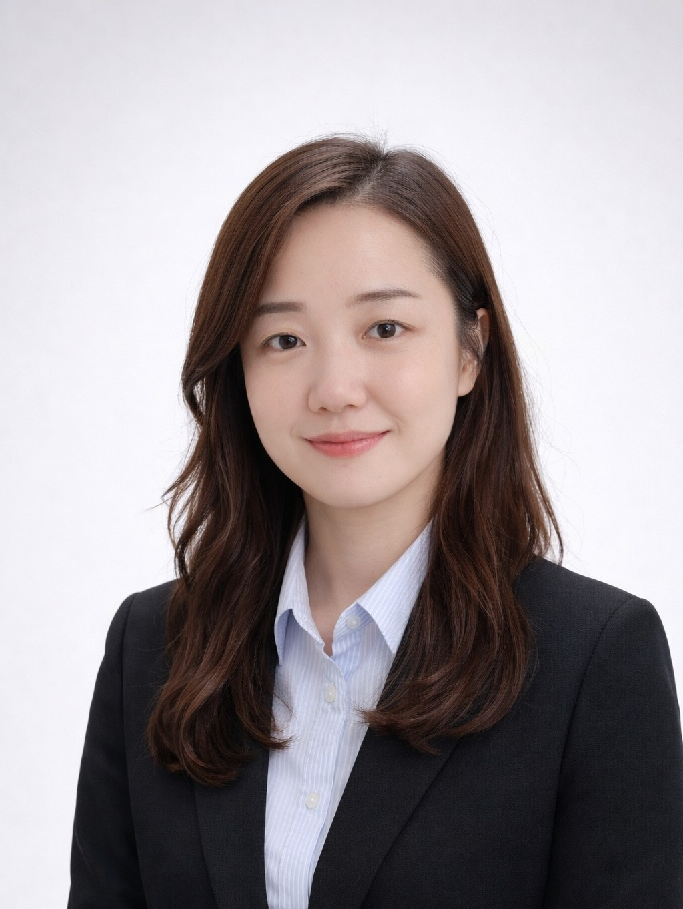

기고문
WORLDVIEW · 2019년 10월호 pp.30–35
독서란 인생이라는 정원에
꽃과 나무를 심는 일
어린이철학교육 현장 스케치

장화연
주니어솔로몬 설립자 · 원장
어린이철학교육 현장 스케치

"독서란 아이의 인생이라는 정원에 꽃과 나무를 심는 일입니다."
"다다다다다다..." 복도를 달리는 소리가 들린다. 아이들이다. 전속력으로 달리느라 빠져나온 아이들 웃음소리가 문틈으로 먼저 새어 들어온다. 학원에 오는 아이들의 일상 풍경이다. 학원을 좋아하는 도시의 아이들이라니? 믿기지 않는다. '학교에 가기 싫어요', '학원에 가기 싫어요'를 입에 달고 사는 것처럼 보이는 초등학생 아이들에게 어떤 변화가 생긴 것일까? 일주일의 기다림이 아이들의 발걸음에서 느껴진다. 놀라운 사랑을 받으며 초·중등학생들과 함께 독서토론 수업을 하고 있다. 오래되지 않아서인지 아직도 늘 설레고, 여전히 첫사랑이 진행 중이다.
시중에 판매되는 초등 국어 문제집을 풀게 한 적이 있다. 이런 문제가 적혀있었다. 빈칸에 알맞은 낱말을 넣어 문장을 완성하세요. 현주는 ㅇㅇ 할 차례가 돌아오자 심장이 콩닥콩닥 뛰었어요.
한 학생이 손을 들고 묻는다. "선생님, 이건 '사랑'이라는 단어가 들어가야 할 거 같은데요? 심장이 콩닥콩닥 뛴다고 하니까요." 초등학교 2학년 남자아이다. 아이들은 금세 와- 하고 웃는다. 이 문제의 답안지에 적힌 정답은 '발표'였다.
풀던 문제집을 덮고 아이들 눈을 맞추며 이 문장에 어울리는 가장 좋은 낱말은 어떤 것일지, 각자 자신의 정답을 만들어 보는 것으로 수업의 방향을 이끈다. 우리는 지금 정답을 맞히는 것이 아니라, 참신하고 창의적인 생각을 발견하는 것이 더 경쟁력 있는 사회 속에 살고 있다. 그래서 우리는 토론 수업을 하고 있다. 맞고 틀리고, 옳고 그름이 아니라 다름에 대해 의견을 나누고 있는 것이다. 다양한 관점을 가져볼 기회다.
창의성과 상상력은 어린아이들의 전유물인 것인가? 우리는 왜 상상을 멈추고 표준화되어가는 것일까? 빈칸에 적은 단어는 고학년이 될수록 비슷한 단어로 추려지고, 어른이 되면 거의 한두 개의 같은 단어로 통일이 된다는 것이다.
필자가 주니어솔로몬에서 진행하고 있는 수업의 뿌리는 어린이 철학 프로그램(Philosophy for Children, P4C)이다. 미국 IAPC(the Institute for Advancement of Philosophy for Children) 연구소를 설립한 매튜 립맨(Matthew Lipman) 교수님의 제자인 서울교대 한국철학아카데미의 박진환 교수님 밑에서 처음 이 학문을 접하게 되었다.
학습이 우선시 되는 일방적인 교수법(learn to know)이 아니라 질문을 기초로 학생들이 스스로 배울 수 있는, 자기주도적인 수업을 이끌어가는(teach to learn) 역발상의 수업이었다. 학생들이 발제를 기준으로 이끌어가는 그야말로 주객전도(!) 수업이다. 유대인 교육인 하브루타 수업, 자기주도 학습법, 플립 러닝(Flipped Learning, 거꾸로 수업) 등이 인기를 모으고 있지만 그것을 포괄한 토론식 수업이었다. 아이들은 말하는 데 두려움이 없었다. 각자 다른 생각을 가진 것이지 틀린 것이 없기 때문이다.
목동 사고력교육센터에서 선임 연구원으로 교재를 개발하면서 수업을 한지 올해로 어느새 15년이 흘렀다. 그때 가르친 초등학생들은 한국을 포함한 세계의 내로라할 좋은 대학에 들어갔고, 졸업을 했고, 사회의 훌륭한 일원으로 자라고 있다. 자랑할 만한 것은 이 점이다. 대개 책을 여전히 좋아한다는 것이다. 그 말은 어른이 된 아이들이 여전히 성장하고 있다는 뜻이다. 남은 삶을 얼마나 풍요롭게 가꿀 수 있겠는가.
어린이 철학(P4C)이라는 프로그램의 시초부터가 아이들의 능력에 대한 믿음을 근거로 시작된 것이다. 어린이는 메타적이고 철학적인 사고를 할 수 없다는 피아제(Piaget)의 인지발달이론에 대한 정면 저항으로 — 어린이들도 철학적으로 생각할 수 있는 능력이 충분하며 철학 교육을 통해서 비판적이고 창의적인 생각을 연습할 수 있다는 신념을 가진 한 교수님의 실험 정신에서 시작된 프로그램이다.
주니어솔로몬에서는 이를 기초로 어린이 학생들과 함께 매주 90분씩 토론 수업을 진행하고 있다. 책을 읽고, 질문을 만들고, 좋은 질문을 뽑아 토론한다. 그리고 생각을 정리해 글을 쓴다. 큰 틀은 여기에서 벗어나지 않는다. 그런데 아이들은 이 수업을 몹시 좋아한다. 'A는 B'라는 정답을 강요받는 것이 아니라 'A는 A와 그 나머지의 모든 가능성'이 되기 때문이다.
지상 최고의 아날로그는 책 읽기가 아닐까. 요즘 아이들에게 적용될 것이다. 아이들은 바쁘다. 학교와 학원 스케줄을 소화해야 하는 것은 물론이고, 요즘 같은 시대에 스마트폰으로 할 수 있는 것들이 너무나 많다. 그토록 재미있는 디지털적인 것을 모두 포기하고 꽃잎 같은 종이 책장이나 넘기는 아날로그적인 사치를 부릴 인내심이 없는지도 모르겠다.
책을 읽지 않으면 방향을 잃고 휩쓸리기 쉽다. 쉽고 빠른 것만을 선택하는 요즘 아이들에게 생각할 수 있는 기회를 줄 수 있는 것은 책밖에 없다. 책이라는 좋은 도구를 통해 다양한 관점을 배우고 접한 뒤에 자신만의 체계를 세우고, 인공지능과 4차 산업혁명이 따라잡지 못하는 오직 자신만의 창의적이고 독창적인 아이디어를 계발해야 한다.
최초의 독서에 대한 기억을 떠올려 본다. 맨 처음 독서는 종이책으로 이루어지지 않았다. 한밤중, 불이 다 꺼진 방 안에서 아빠는 당신의 기억에 의지해 밤이 깊도록 요셉과 형제들의 이야기, 다니엘과 사자 굴 이야기, 홍해를 가르는 모세의 이야기며 돌아온 탕자 이야기를 들려주셨다. 어둠 속에서 라이브로 진행된 성경 이야기는 무한한 상상력을 불러일으켰다. 심장 박동이 빨라지고 침이 바짝바짝 마르도록 신기하고 극적인 이야기가 끝이 없었다.
책에 대한 첫 경험이 좋은 아이는 읽는 재미에 빠지고 점차 배움의 기쁨에 젖어 가는 것이다. 그러니 시작이 중요하다. 배를 만들게 하려면 배 만드는 법을 가르치려 하지 말고 바다를 동경하게 하라는 생텍쥐페리(<어린 왕자>의 저자)의 말처럼, 책을 읽히려고 강요하는 것보다 책 읽는 기쁨을 맛보게 한다면 아이는 자연히 책을 가까이할 수밖에 없을 것이다.
2019년 칼데콧 대상을 받은 소피 블랙올의 <안녕, 나의 등대>로 수업을 했다. 우선 작가에 대해 알아보았고, '안녕'이라는 말이 '안녕?' 인지 '안녕!' 인지에 대해 상상해보았다. 문장부호가 아니면 만남인지 헤어짐인지 알 수 없이 오묘한 한국어 '안녕'이라는 단어에 대해서 아이들과 이야기를 나누었다.
수업이 진행 중인 무렵 우리나라에서는 아시아 최초로 변호사와 인공지능 알파로의 한판 법률 대결이 벌어지던 중이었다. 그래서 이전에 있었던 알파고와 이세돌의 바둑 경기를 예로 들어 승부를 예측해 보기도 하고 아쉽게도 앞으로 사라져갈 직업에 대한 이야기도 했다.
책을 읽기 전과, 수업을 마치고 나서 아이들의 생각과 사고가 확장되는 것을 눈으로 본다. 책에서 본 것이 작은 모티브가 되어 음악과 예술은 물론이고, 현장에 나가 직접 눈으로 보고 경험하는 교양 수업을 통해 체험을 확장한다.
<맹자>에 나오는 독서상우(讀書尙友, 책을 읽음으로써 옛날의 현인들과 벗이 될 수 있음을 이르는 말)라는 말처럼 책은 아이 곁에서 함께 자라는 좋은 친구가 될 것이다. 지금은 결코 만날 수 없는 오래된 친구를 벗하며 그 친구의 지혜를 빌려 세상을 바라보는 폭넓은 시각을 갖게 될 것이다.
모든 지식과 지혜가 켜켜이 쌓여 세상 유일한 자신만의 눈을 갖게 될 것이다. 어린 시절 무릎에 앉아 듣던 책 읽기의 경험은 사랑받았던 기억으로 남아 아이 인생에 두고두고 기억에 남을 자산이 될 것이다. 인생에 정답이 없듯이 독서에도 정답이 없지만, 독서란 아이의 인생이라는 정원에 꽃과 나무를 심는 일이다.
저자 소개
스페인 살라망카 대학교, 미국 컬럼비아 대학교에서 공부하였으며 한국외국어대학교 스페인어학과를 졸업했다. 월간 <빛과 소금> 기자, 고차적사고력교육센터(HOTEC) 선임 연구원이며, 다수의 그림책과 단행본을 기획하고 편집했다. 현재 한국외국어대학원 독서토론교육 석사 과정을 졸업하였으며, 주니어솔로몬(이촌 본원)에서 초·중등학생을 위한 어린이 철학 프로그램을 개발하고 하브루타식 독서 토론 수업을 진행하고 있다.